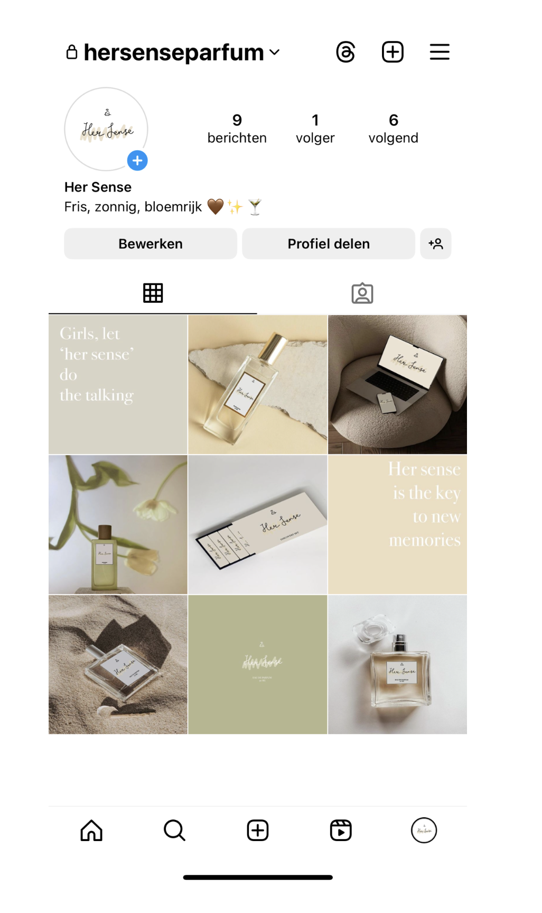
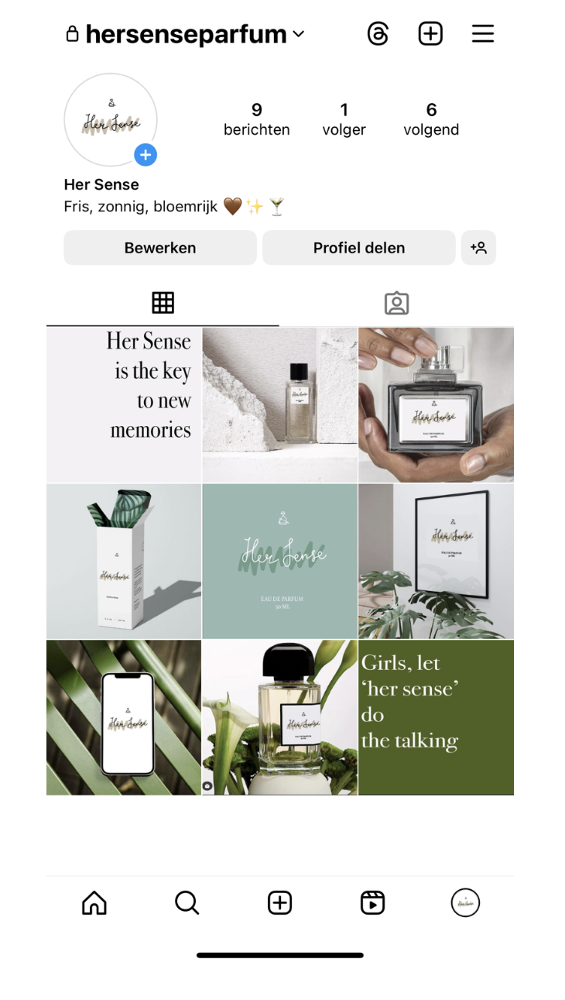
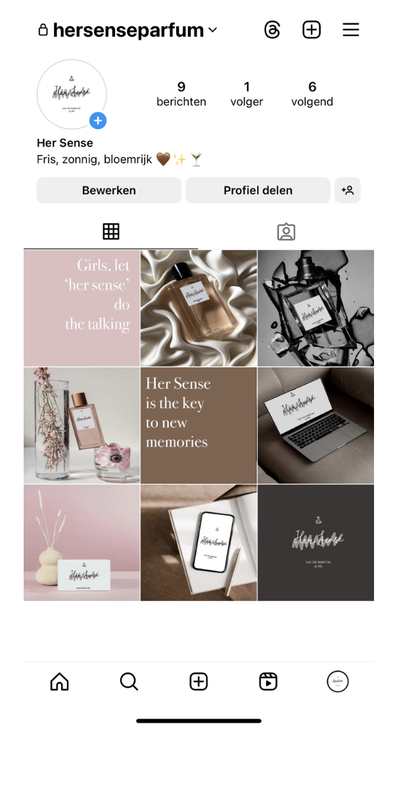
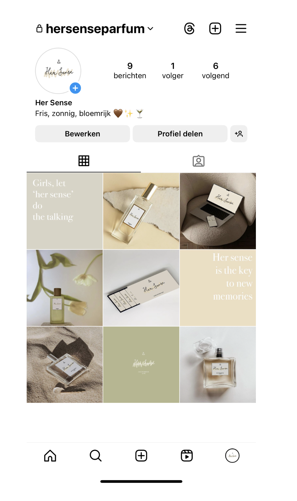
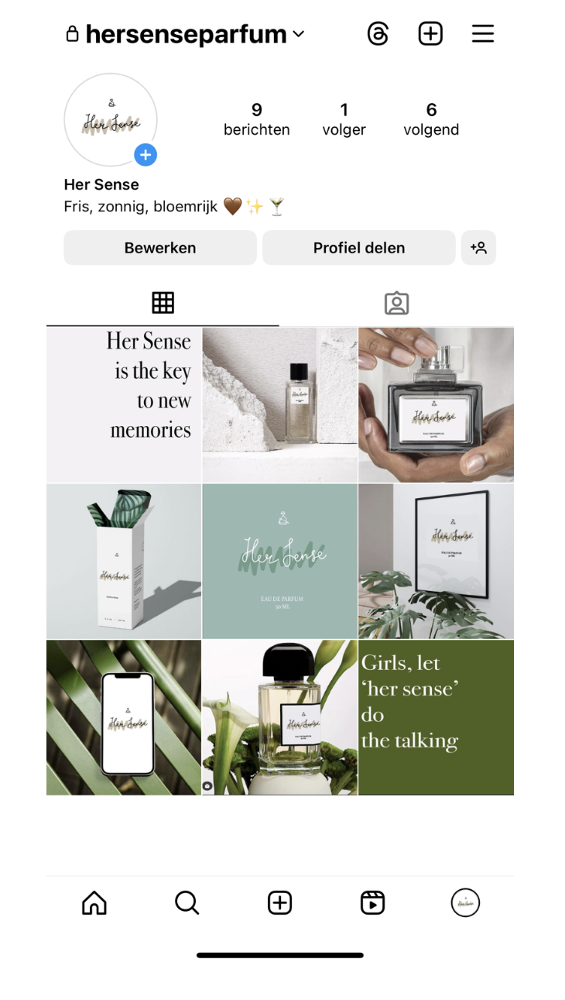
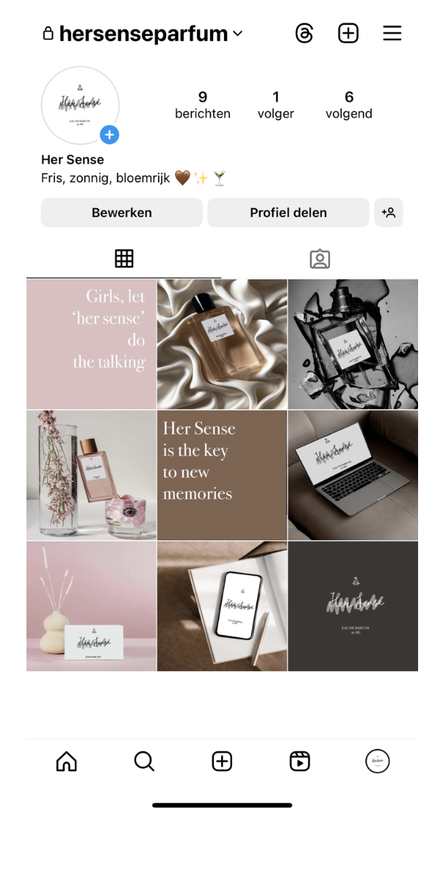
 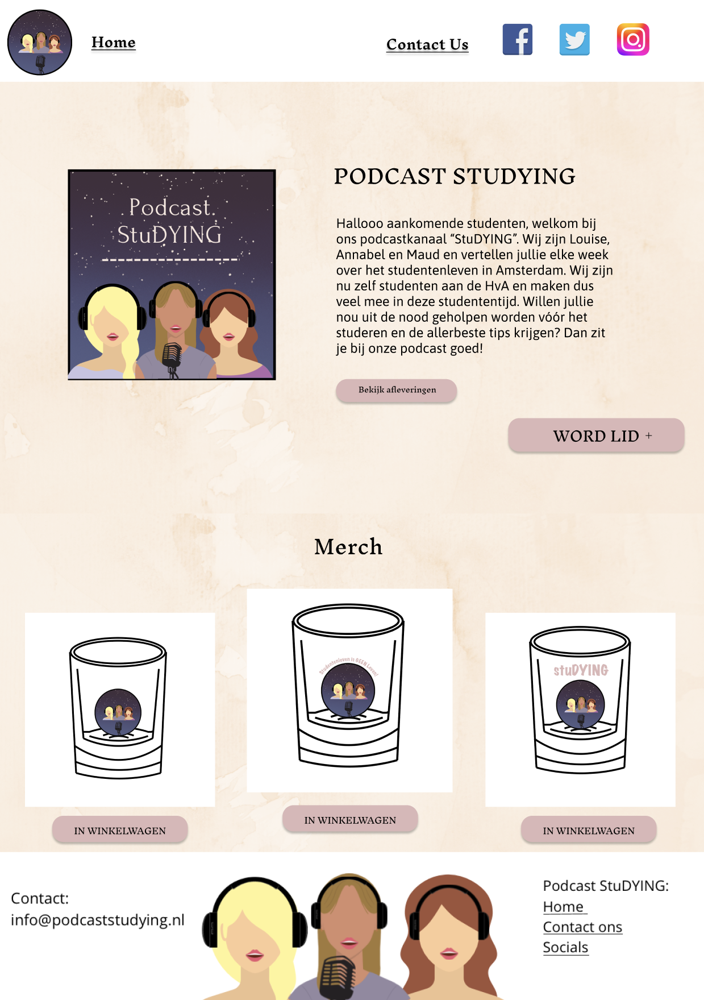
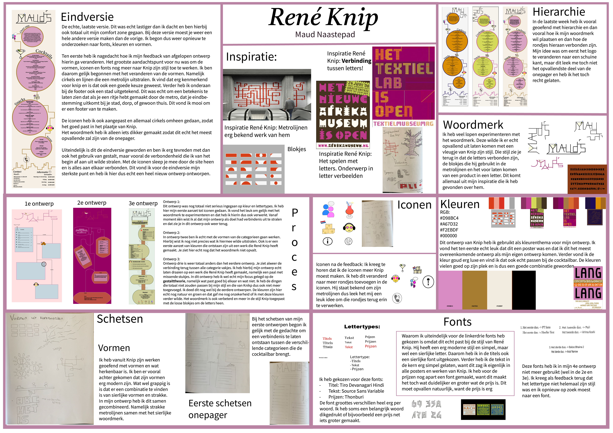
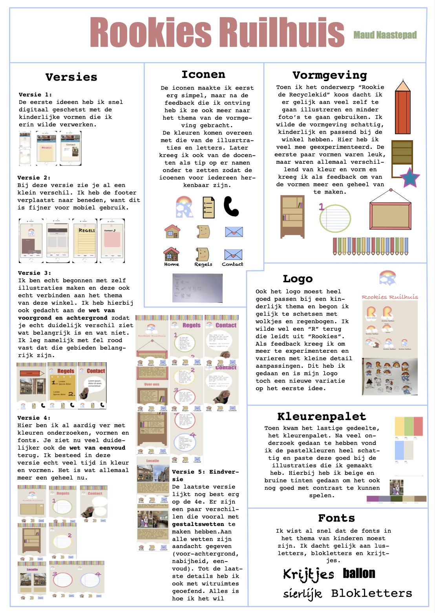
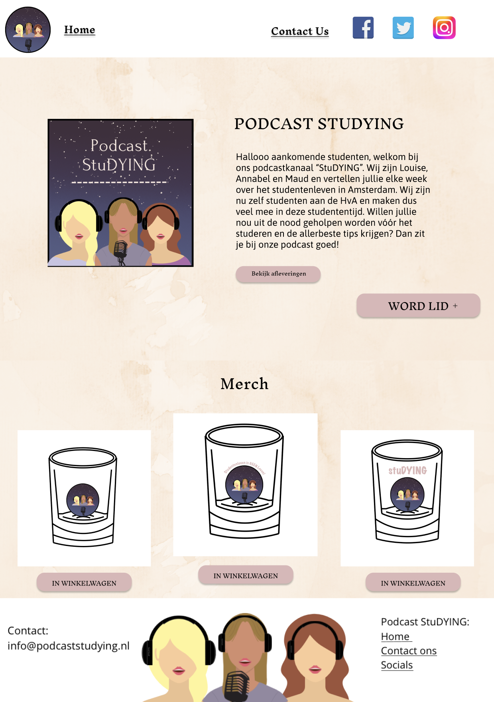
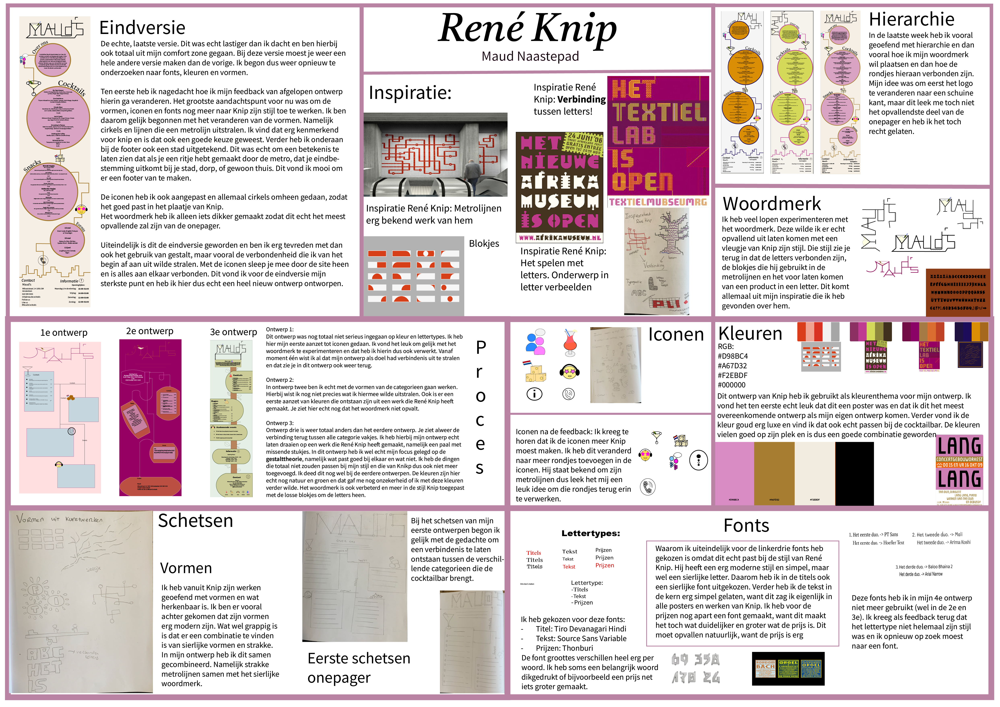
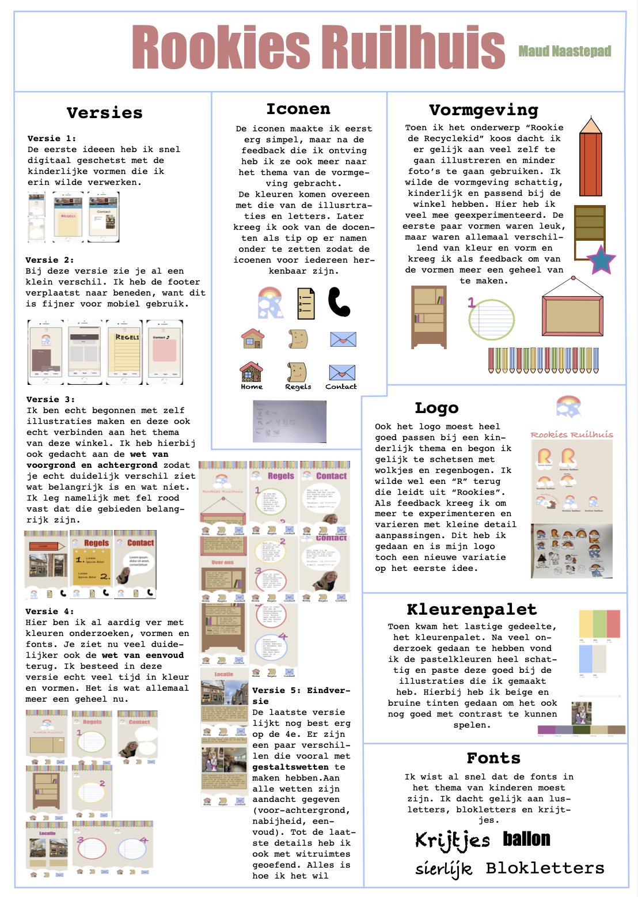
Het tweede persoonlijke leerdoel mocht je zelf bepalen. Ik heb gekozen voor een cursus hoe je een instagram feed op je best kan maken voor een bepaald product. Bij mij was dit product een parfummerk 'Her Sense' en heb ik allerlei mockups, bill boards en quotes gemaakt. Ik heb via allerlei cursus sites geleerd hoe je de meeste mensen op je instagram account laat afkomen en heb bij dit leerdoel echt heel veel geleerd voor wat ik in de toekomst kan gebruiken!
Internetstandaarden was dit blok het meest uitdagende vak en het vak waar ik het meest tegenop zag. Ik heb nog nooit eerder gecodeerd of gehoord over de termen CSS en HTML en was alles erg nieuw voor mij. Ik vond de lessen vandaar ook erg lastig en heb ik veel om hulp gevraagd aan de docent. Uiteindelijk in de laatste paar weken begreep ik het steeds beter en vond ik het ook leuk worden. Nu weet ik dat dit nog maar een stukje basis was, maar het is erg nuttig geweest om een eigen website in elkaar te zetten.
Het vak content vond ik ook erg leuk. We kregen als de opdracht om een podcast te maken over iets wat met Amsterdam te maken heeft. Hierbij moesten we een homepage maken met verschillende afleveringen die bij onze podcast passen. De podcast kun je luisteren door hier op te klikken!
Vormgeving was een erg vrij vak met welke kleuren en vormen je wilde gebruiken, maar was er 1 regel waar je je aan moest houden, namelijk de stijl van de kunstenaar en hoe hij zijn vormen maakt. Ik kreeg René Knip en hij is de kunstenaar van de metrolijnen op de muur in de metrostations. Ik heb zijn inspiratie van de lijnen gebruikt in mijn ontwerp en de iconen met losse blokes gemaakt (dit deed Knip ook met zijn tekeningen op muurbetegeling). Ik heb een design rationale gemaakt om hier het proces te laten zien van het vak.
Na de vakken heb ik het blok natuurlijk weer afgesloten met een project. Dit project was zelfstandig en moest over een duurzaam initatief gaan in Amsterdam en een soort 'fan page' ervan maken. Ik had gekozen voor de tweedehands kledingwinkel 'Rookie de Recyclekid'.
Hierbij mocht je volledig je eigen ideeën en vormen brengen en wilde ik mijn inspiratie halen uit de kinderspullen. Ik heb het zo kinderlijk mogelijk gemaakt om er dezelfde sfeer aan te geven. Ook heb ik alles weer zelf gecodeerd en best wel gestruggeld hiermee, maar heb ik wel op tijd de hulp gekregen die ik nodig had.